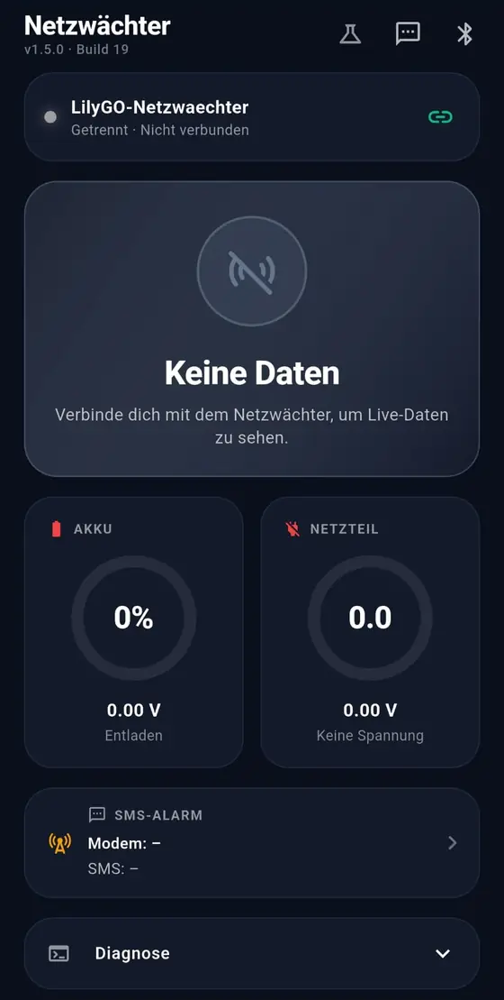

-
01
Passkey-Login für pfSense
Open-Source-Add-on, mit KI gebaut, Oktober 2026Ein zweiter Faktor für das Web-Interface der pfSense-Firewall: nach dem Passwort ein Passkey. Im Einsatz auf meiner eigenen Firewall.
PHP, JavaScript, WebAuthn
Zum Projekt
-
02
Netzwächter
Hardware, dazu Firmware und App mit KI gebaut, Herbst 2026Ein LTE-Gerät, das per SMS meldet, wenn der Strom ausfällt. Entstanden, nachdem bei meinen Grosseltern während der Ferien die Kühltruhe ausgefallen war.
ESP32, LTE, Flutter, Bluetooth
Zum Projekt
-
03
Mein Homelab
Privatprojekt, seit 2025Ein Proxmox-Server, den ich wie ein kleines Firmennetz betreibe: drei Netzzonen, Single Sign-on, automatische Updates und Backups ausser Haus.
Proxmox, pfSense, TrueNAS, Docker, Ansible
Zum Projekt
-
04
Eigener Messenger
Schulprojekt, Modul 306Ein eigener Chat-Server mit Matrix Synapse und Element, von der Planung über das Testkonzept bis zum Abschluss.
Matrix Synapse, Element, Docker
Zum Projekt
Netzwerke,
Server,
Betrieb.
01Projekte
02Über mich
Ich mache meine Lehre als Informatiker EFZ, Fachrichtung Plattformentwicklung, an der Technischen Fachschule Bern. Dort finden sowohl die Schule als auch die praktische Ausbildung statt, ich bin in der Klasse INF2025. In der Praxis liegt mein Schwerpunkt im Netzwerk, unter anderem betreue ich einen hochverfügbaren pfSense-Firewall-Cluster.
Seit 2025 betreibe ich zu Hause einen Proxmox-Server mit eigener Firewall, einer DMZ für alles Öffentliche, Single Sign-on vor jeder Web-App und Backups, die jede Woche das Haus verlassen. Das meiste, was ich über den Betrieb von Diensten weiss, habe ich gelernt, indem ich dieses Setup kaputt gemacht und wieder repariert habe.
Ich bin kein Applikationsentwickler. Mein Fachgebiet ist die Plattformentwicklung: Netzwerke, Server und der Betrieb von Systemen. Wenn ein Projekt Code braucht, wie mein pfSense-Add-on oder der Netzwächter, schreibe ich ihn mit Hilfe von KI. Ich lege fest, was die Lösung können muss, prüfe das Ergebnis, teste es und betreibe es selbst.
- Wohnort
- Schweiz
- Lehre
- Informatiker EFZ, Plattformentwicklung
- Lehrbetrieb und Schule
- Technische Fachschule Bern
- Klasse
- INF2025
- Sprachen
- Deutsch, Englisch
03Womit ich arbeite
Mein Schwerpunkt ist die Infrastruktur darunter: Netzwerk, Server, Sicherheit und der zuverlässige Betrieb. Code ist für mich ein Werkzeug, das ich mit KI einsetze, wenn ein Projekt ihn braucht.
Netzwerk
- pfSense und pfSense Plus
- CARP-Hochverfügbarkeit
- VLANs
- NAT und Firewall-Regeln
- DNS
Server
- Proxmox VE
- Linux
- Docker und LXC
- TrueNAS und ZFS
Sicherheit
- Authentik
- Cloudflare Zero Trust
- CrowdSec
- Passkeys (WebAuthn)
Betrieb
- Ansible und Semaphore
- Netbox
- Pulse
- Dokumentation schreiben
Code, mit KI
- PHP
- C++ (Arduino)
- Flutter (Dart)
- HTML und CSS
04Werdegang
- 2025
Lehre begonnen
Informatiker EFZ, Fachrichtung Plattformentwicklung, an der Technischen Fachschule Bern, Klasse INF2025.
- 2025
Homelab aufgebaut
Mein eigener Proxmox-Server zu Hause, auf dem heute die meisten meiner Projekte laufen.
- Okt. 2026
Passkey-Add-on veröffentlicht
Mein erstes Open-Source-Projekt für pfSense, den Code habe ich mit KI geschrieben.
- Herbst 2026
Netzwächter gebaut
Hardware, Firmware und Android-App in einem Projekt, den Code habe ich mit KI geschrieben.
- Heute
In der Lehre, mit Schwerpunkt Netzwerk
An der Technischen Fachschule Bern betreue ich einen hochverfügbaren Firewall-Cluster.
05Freizeit
In meiner Freizeit spiele ich gerne GeoGuessr. Mich interessieren Geografie und die Welt, und jede Runde zeigt mir neue Länder, Strassen und Landschaften. Meistens spiele ich Duos und klassische 25k-Runden.
06Kontakt
Haben Sie eine Frage zu einem Projekt oder eine Stelle, auf die ich passen könnte? Schreiben Sie mir eine E-Mail.
lukas.dalloz@proton.me